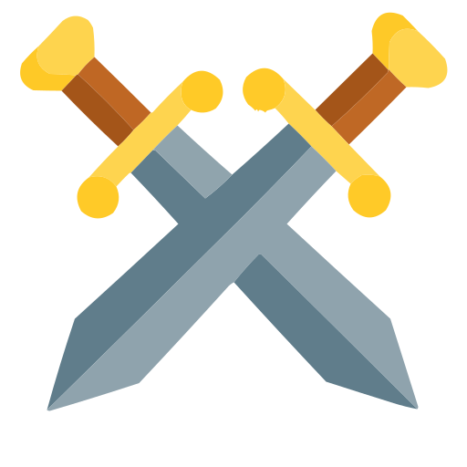

WCS
A flexible combat system framework
Easy to Use
WCS was created with simplicity in mind, covering every possible aspect of a combat system and providing useful abstractions for them
Flexible and abstract
WCS is very flexible and will fullfil all your needs, hiding tedious stuff like replication and ability management inside.
Made with TypeScript
WCS is made using TypeScript & Roblox-ts so it supports typescript natively. However, it also provides the luau types for people who don't use TS.